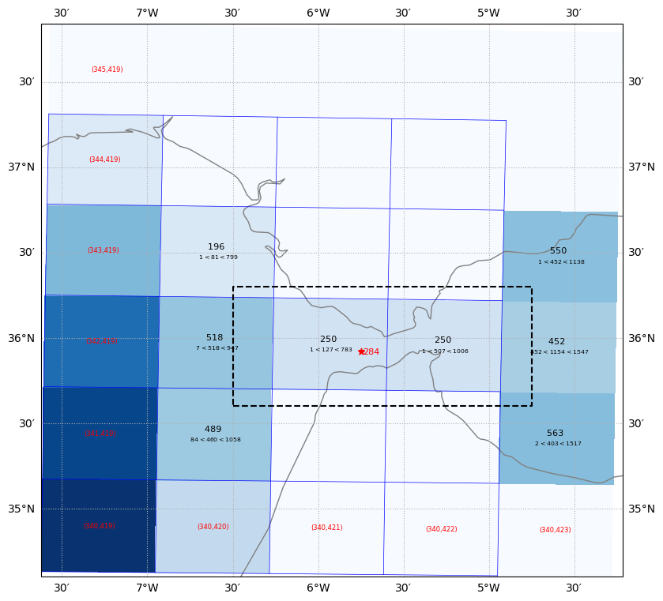
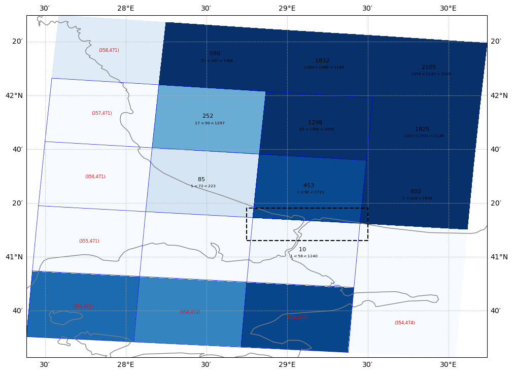
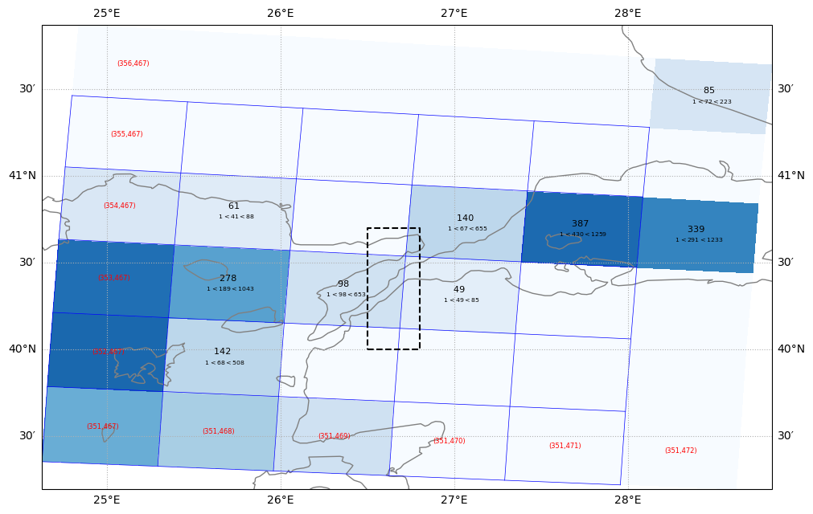
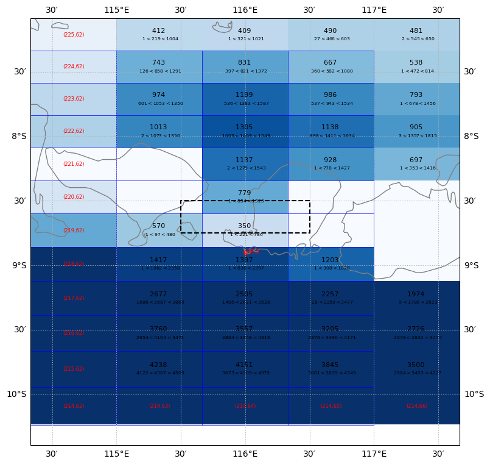
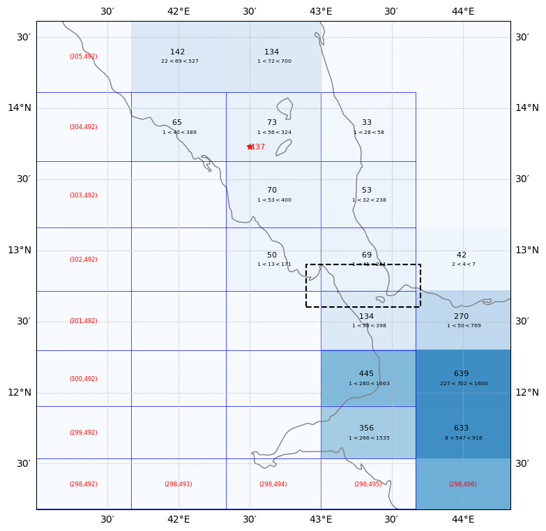
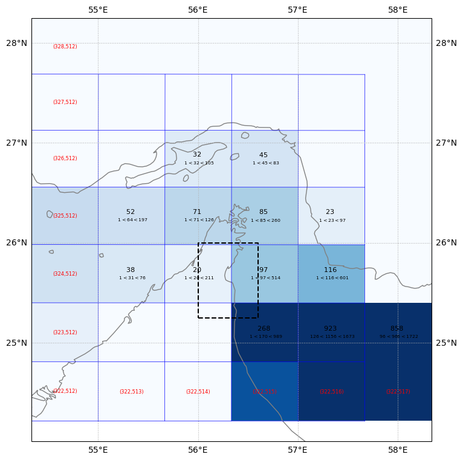

Set sub-grid widths for selected channels#
import os
import sys
sys.path.insert(0,os.path.abspath('src/'))
%load_ext autoreload
%autoreload 2
%matplotlib inline
import numpy as np
import xarray as xr
import os
from datetime import date, datetime
import matplotlib.pyplot as plt
from topo_edit_util import inspect_topo, create_soc_topo_table
Get input topography data set#
path_root = './'
file_root = 'topo.'
grid = 'tx2_3v3'
topo_src = 'SRTM15_V2.4'
nsub = 'sub150'
edit_no = 2
case = 'SmL1.0_C1.0'
depth_var_in = 'D_edit2'
path_in = path_root
file_in = file_root + nsub + '.' + grid + '.' + topo_src + '.edit' + '{:d}'.format(edit_no) + '.' + case + '.nc'
# This is the current default input file
#file_in = 'ocean_topo_tx2_3v2_240501.nc'
print(path_in+file_in)
dss = xr.open_dataset(path_in+file_in)
dss
./topo.sub150.tx2_3v3.SRTM15_V2.4.edit2.SmL1.0_C1.0.nc
<xarray.Dataset> Size: 21MB
Dimensions: (lath: 480, lonh: 540, latq: 481, lonq: 541, nEdits: 367)
Coordinates:
* lath (lath) float64 4kB -81.56 -81.46 -81.36 ... 89.33 89.6 89.86
* lonh (lonh) float64 4kB -286.7 -286.0 -285.3 ... 71.33 72.0 72.67
* latq (latq) float64 4kB -81.61 -81.51 -81.41 ... 89.46 89.72 89.91
* lonq (lonq) float64 4kB -287.0 -286.3 -285.7 ... 71.67 72.33 73.0
Dimensions without coordinates: nEdits
Data variables: (12/19)
geolon (lath, lonh) float64 2MB ...
geolat (lath, lonh) float64 2MB ...
geolonb (latq, lonq) float64 2MB ...
geolatb (latq, lonq) float64 2MB ...
z (lath, lonh) float32 1MB ...
ocn_frac (lath, lonh) float32 1MB ...
... ...
orig_mask (lath, lonh) int32 1MB ...
D_interp (lath, lonh) float32 1MB ...
D_edit2 (lath, lonh) float32 1MB ...
iEdit (nEdits) int32 1kB ...
jEdit (nEdits) int32 1kB ...
zEdit (nEdits) float64 3kB ...
Attributes:
Description: Ocean Topography Statistics on MOM6 Grid
Creator: Frank Bryan
Created: 20260226
Generating Code: create_model_topo.f90
Model Grid Version: tx2_3v3
Source Topography Data: /glade/work/bryan/Observations/Topography/SRTM...
Edit History: Hand Edit + Lake Fill 02/27/2026
Manual edits updated on:: 2026-03-04T14:46:33.511255
By:: Frank Bryan (bryan@ucar.edu)
url: https://github.com/NCAR/tx2_3/topography/soc_table = create_soc_topo_table()
Set up output files#
today = datetime.today()
path_out = path_in
print(path_out)
file_out_chan = 'channels_' + grid + '_' + today.strftime("%y%m%d") + '.txt'
print('channel width file : ',file_out_chan)
fmt_out = "{0:s}, {1:8.2f}, {2:8.2f}, {3:8.2f}, {4:8.2f}, {5:10.1f} ! {6:s}\n"
./
channel width file : channels_tx2_3v3_260304.txt
Selected Straits#
Strait of Gibralter#
place = 'St. of Gibralter'
print(soc_table[place])
lon_beg = -7
lon_end = -4
lat_beg = 35
lat_end = 38
zmax = 1300.
ax=inspect_topo(dss,depth_var_in,lon_beg,lon_end,lat_beg,lat_end,zmax,place=soc_table[place])
lon1 = -6.5
lat1 = 35.6
lon2 = -4.75
lat2 = 36.3
xbox = [lon1, lon2, lon2, lon1, lon1]
ybox = [lat1, lat1, lat2, lat2, lat1]
ax.plot(xbox,ybox,linestyle='dashed',color='k')
{'lat': 35.92, 'lon': -5.75, 'depth': 284.0, 'width': 10.0}
[<matplotlib.lines.Line2D at 0x146f69d81f90>]

width = 12.0e3
print('width = ',width)
with open(path_out+file_out_chan,'w') as f:
line = fmt_out.format("U_width",lon1,lon2,lat1,lat2,width,place)
f.write(line)
width = 12000.0
Bosphorus#
## Black Sea / Bosphorus
place = 'Bosphorus St.'
lon_beg = 28
lon_end = 30.5
lat_beg = 40.5
lat_end = 42.5
zmax = 500.
ax=inspect_topo(dss,depth_var_in,lon_beg,lon_end,lat_beg,lat_end,zmax)
lon1 = 28.75
lat1 = 41.1
lon2 = 29.5
lat2 = 41.3
xbox = [lon1, lon2, lon2, lon1, lon1]
ybox = [lat1, lat1, lat2, lat2, lat1]
ax.plot(xbox,ybox,linestyle='dashed',color='k')
[<matplotlib.lines.Line2D at 0x146f68b81d10>]

width = 5.0e3
print('width = ',width)
with open(path_out+file_out_chan,'a') as f:
line = fmt_out.format("V_width",lon1,lon2,lat1,lat2,width,place)
f.write(line)
width = 5000.0
Dardanelles#
place = 'Dardanelles'
lon_beg = 25
lon_end = 29
lat_beg = 39.5
lat_end = 42
zmax = 500.
ax=inspect_topo(dss,depth_var_in,lon_beg,lon_end,lat_beg,lat_end,zmax)
lon1 = 26.5
lat1 = 40.
lon2 = 26.8
lat2 = 40.7
xbox = [lon1, lon2, lon2, lon1, lon1]
ybox = [lat1, lat1, lat2, lat2, lat1]
ax.plot(xbox,ybox,linestyle='dashed',color='k')
[<matplotlib.lines.Line2D at 0x146f68814f50>]

width = 5.0e3
print('width = ',width)
with open(path_out+file_out_chan,'a') as f:
line = fmt_out.format("U_width",lon1,lon2,lat1,lat2,width,place)
f.write(line)
width = 5000.0
Lombok Strait#
place = 'Lombok St.'
print(soc_table[place])
lon_beg = -245.5
lon_end = -242.
lat_beg = -10
lat_end = -7.
zmax = 1500.
ax=inspect_topo(dss,depth_var_in,lon_beg,lon_end,lat_beg,lat_end,zmax,place=soc_table[place])
lon1 = 115.5
lon2 = 116.5
lat1 = -8.75
lat2 = -8.5
xbox = [lon1, lon2, lon2, lon1, lon1]
ybox = [lat1, lat1, lat2, lat2, lat1]
ax.plot(xbox,ybox,linestyle='dashed',color='k')
{'lat': -8.9, 'lon': 116.0, 'depth': 350.0, 'width': 22.0}
[<matplotlib.lines.Line2D at 0x146f68854b90>]

width = soc_table[place]['width']*1000.
print('width = ',width)
with open(path_out+file_out_chan,'a') as f:
line = fmt_out.format("V_width",lon1,lon2,lat1,lat2,width,place)
f.write(line)
width = 22000.0
Bab El-Mandeb#
place = 'Bab El-Mandeb'
print(soc_table[place])
lon_beg = 41.5
lon_end = 44.5
lat_beg = 11.5
lat_end = 14.75
zmax = 1000.
ax=inspect_topo(dss,depth_var_in,lon_beg,lon_end,lat_beg,lat_end,zmax,place=soc_table[place])
lon1 = 42.9
lon2 = 43.7
lat1 = 12.6
lat2 = 12.9
xbox = [lon1, lon2, lon2, lon1, lon1]
ybox = [lat1, lat1, lat2, lat2, lat1]
ax.plot(xbox,ybox,linestyle='dashed',color='k')
{'lat': 13.73, 'lon': 42.5, 'depth': 137.0, 'width': 32.0}
[<matplotlib.lines.Line2D at 0x146f6814c690>]

width = soc_table[place]['width']*1000.
print('width = ',width)
with open(path_out+file_out_chan,'a') as f:
line = fmt_out.format("V_width",lon1,lon2,lat1,lat2,width,place)
f.write(line)
width = 32000.0
St of Hormuz#
place ='St. of Hormuz'
lon_beg = 54.5
lon_end = 59
lat_beg = 24.5
lat_end = 28.5
zmax = 250.
ax=inspect_topo(dss,depth_var_in,lon_beg,lon_end,lat_beg,lat_end,zmax)
lon1 = 56
lon2 = 56.6
lat1 = 25.25
lat2 = 26.0
xbox = [lon1, lon2, lon2, lon1, lon1]
ybox = [lat1, lat1, lat2, lat2, lat1]
ax.plot(xbox,ybox,linestyle='dashed',color='k')
[<matplotlib.lines.Line2D at 0x146f5bf5b750>]

width = 5.
print('width = ',width)
with open(path_out+file_out_chan,'a') as f:
line = fmt_out.format("V_width",lon1,lon2,lat1,lat2,width,place)
f.write(line)
width = 5.0